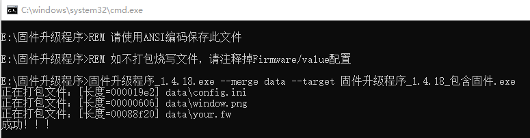
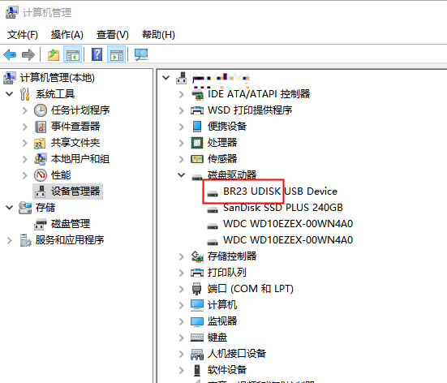
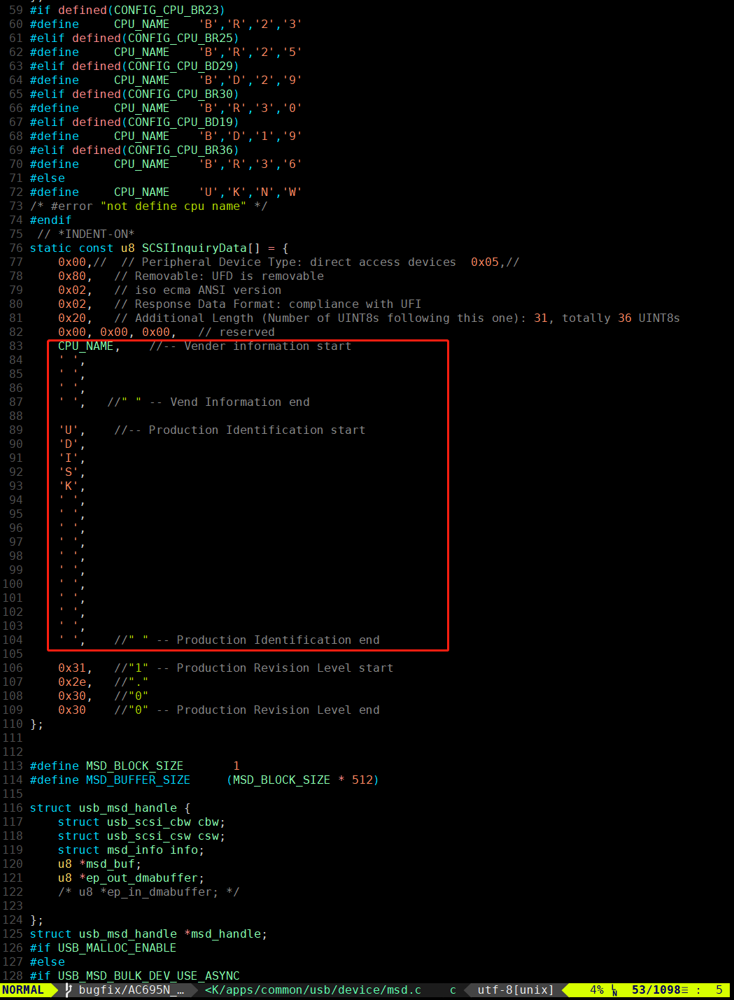
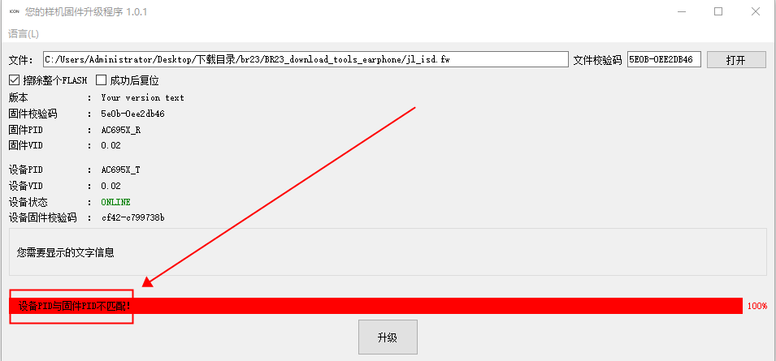
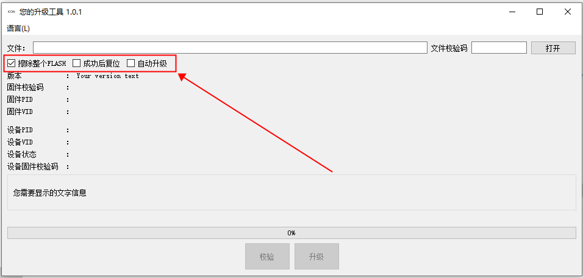
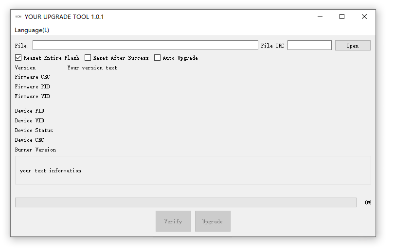
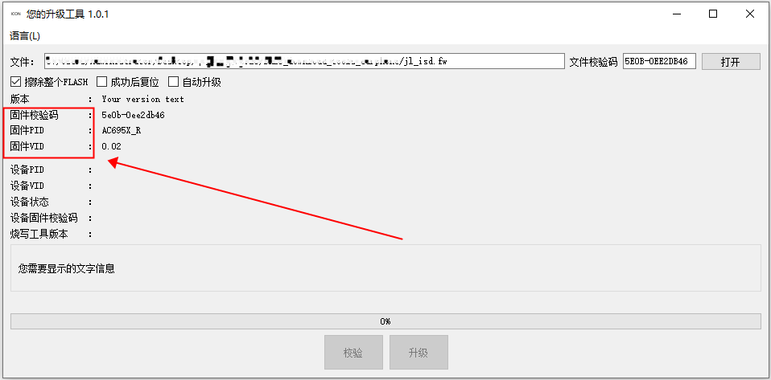
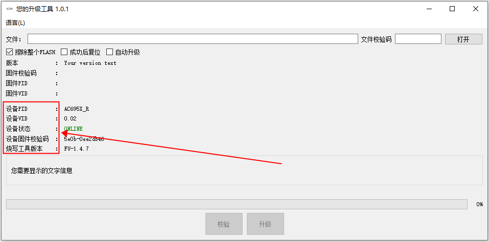
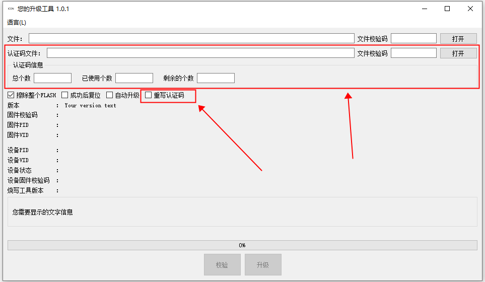

1.1.1.1.1. 配置项说明
Important
配置文件必须用UTF8编码保存。
配置文件config.ini必须存放在工具同级目录的data目录下。需要合并到工具中的文件也必须存放到data目录下。如下图：

文件目录结构
本工具界面上所有文字都可以通过配置项进行配置。包括中/英语言文字。中/英文字通过*text_cn和*text_en配置项进行配置。
1.1.1.1.2. 合并固件文件到工具
此功能详细配置项如下：
###########################################
#
# 需要合并到工具的固件文件
# 升级用的固件文件
# 在固件文件和工具合并后有效
#
###########################################
[Firmware]
value = your.fw
此配置项需要把固件文件和data/config.ini文件，一起合并到工具中才会生效。合并固件文件时需要将固件文件也放到data目录下，并且设置Firmware/value的值为合并的固件文件名。参考图文件目录结构。
文件准备好后，通过命令行执行
固件升级程序_1.4.18.exe --merge data --target 固件升级程序_1.4.18_包含固件.exe
就可以将data目录合并到工具中，如下图：

固件升级程序_1.4.18_包含固件.exe就是合并后包含了固件文件的新工具。
执行合并后的工具，执行固件升级程序_1.4.18_包含固件.exe，固件会自动加载到工具中，并且文件选择栏会不可见。如下图：

1.1.1.1.3. PC模式设备名字配置
此功能详细配置项如下：
#########################################
#
# PC模式下支持升级样机的名字
#
#########################################
[PCMode]
name_list = br23udisk ;支持升级的样机名字列表
wait_time = 1000 ;等待样机从PC模式切换到升级模式的时间
如果样机不能直接进入升级模式并且有PC模式，且SDK支持的情况下，那么可以通过此配置使样机从PC模式切换到升级模式，完成固件升级。
以AC695X为例，标准SDK固件的样机进入PC模式后，可以在WINDOWS设备管理器中看到设备BR23 UDISK USB Device。那么BR23UDISK(不包含中间空格)就是该样机的PC模式名字。如下图：

此名字可以通过SDK的apps/common/usb/device/msd.c文中的SCSIInquiryData来配置。如下图：

Note
如果未能在设备管理器中发现UDISK字样的设备，那么说明当前的SDK可能 不支持标准的命令将样机，从PC模式切换到升级模式。
这需要样机固件开发人员，自行实现从PC模式切换到升级模式的触发方式。例如，可以让样机在检测到，某个按键被按下的时候，调用SDK中的go_mask_usb_updata函数进入升级模式。
1.1.1.1.4. PID显示和匹配规则配置
在很多情况下，开发者会有多款样机在第三方处进行确认。为避免不同硬件的样机升错固件程序，可以通过PID匹配规则来限制样机的升级。此功能详细配置项如下：
#########################################
#
# PID显示和匹配规则配置
#
#########################################
#
# PID匹配
#
[PidMatch]
enable = true ; 是否匹配PID, 如果PID不匹配那么不允许烧写
pid_mismatch_text_cn = "设备PID与固件PID不匹配！"
pid_mismatch_text_en = "The device PID does not match the firmware PID!"
#
# 设备PID白名单
# 如果样机的PID在白名单中
# 升级的时候会忽略样机PID
#
[PidWhiteList]
value = AC695x_TWS,None
#
# Pid映射表,将实际Pid显示为指定Pid
#
[PidMapping]
OLD PID = NEW PID
AC695x_TWS = NewPid
#
# 为兼容旧SDK增加的参数
# PID解析，AC691X有效，AC692X SDK V1版有效
# 将配置中的“PDCTNAME=”以第一个分隔符为间隔分为两段
# 第一段显示为PID，第二段显示为VID
#
[PidSection]
sep = _ ; 分割符号，默认为下划线
如启动PID匹配功能，当固件PID和样机PID不匹配时，工具会提示在PidMatch/pid_mismatch_text_??配置中的设置的文字，如下图：

1.1.1.1.5. 升级选项配置
此功能详细配置项如下：
######################################
#
# 选项配置
#
######################################
[EraseAll]
text_cn = 擦除整个FLASH
text_en = Reaset Entire Flash
checked = true ; 是否默认勾选
[Reset]
text_cn = 成功后复位
text_en = Reset After Success
checked = false ; 是否默认勾选
[AutoUpgrade]
text_cn = 自动升级
text_en = Auto Upgrade
visible = true ; 是否显示
checked = true ; 是否默认勾选,此配置仅在“visible=true”时有效
以上配置在工具界面上的效果如下图：

1.1.1.1.6. 窗口标题栏文字和图标配置
此功能详细配置项如下：
###########################################
#
# 窗口菜单栏信息配置
#
###########################################
[Title]
text_cn = 您的升级程序 1.0.1 ;中文标题文字
text_en = YOUR UPGRADE TOOL 1.0.1 ;英文标题文字
icon_file = window.png ;标题栏图标,支持png,jpg格式文件格式
[Menu]
visible = true ;是否显示顶部菜单栏
language = english ;默认语言，仅支持中文和英语（chinese,english）
[Window]
width = 750 ;窗口最小宽度
#height = 400 ;窗口最小高度
width_fixed = false ;是否固定宽度
height_fixed = false ;是否固定高度
以上配置在工具界面上的效果如下图：

1.1.1.1.7. 固件文件选择栏文字和文件类型
工具支持的固件文件类型有FW和UFW文件，此功能详细配置项如下：
###########################################
#
# 固件文件选择栏配置
#
###########################################
[FirmwareEdit]
label_text_cn = 文件：
label_text_en = File:
crc_text_cn = 文件校验码
crc_text_en = File CRC
open_text_cn = 打开
open_text_en = Open
file_type = fw,ufw ;支持升级的文件类型,
文件类型之间用逗号隔开
以上配置在工具界面上的效果如下图：

1.1.1.1.8. 自定义版本信息配置
此功能详细配置项如下：
########################################
#
# 需要显示的特定版本文字
#
########################################
[ConfigVersion]
text_cn = 版本
text_en = Version
visible = true
value = Your version text
以上配置在工具界面上的效果如下图：

1.1.1.1.9. 固件信息显示配置
此功能详细配置项如下：
########################################
#
# 固件信息显示配置
#
########################################
[FirmwareCrc]
text_cn = 固件校验码
text_en = Firmware CRC
visible = true ;是否显示固件程序校验码
[FirmwarePid]
text_cn = 固件PID
text_en = Firmware PID
visible = true ;是否显示固件文件中配置的PID
[FirmwareVid]
text_cn = 固件VID
text_en = Firmware VID
visible = true ;是否显示固件文件中配置的VID
以上配置在工具界面上的效果如下图：

1.1.1.1.10. 样机信息显示配置
此功能详细配置项如下：
########################################
#
# 样机信息显示配置
#
########################################
[DevicePid]
text_cn = 设备PID
text_en = Device PID
visible = true ;是否显示样机中的PID
[DeviceVid]
text_cn = 设备VID
text_en = Device VID
visible = true ;是否显示样机中的VID
[DeviceCrc]
text_cn = 设备固件校验码
text_en = Device CRC
visible = true ;是否显示设备中的固件校验码
[DeviceStatus]
text_cn = 设备状态
text_en = Device Status
[BurnerVersion]
text_cn = 烧写工具版本
text_en = Burner Version
visible = true ;是否显示设备中固件是被哪个烧写工具烧写的
[ChipCfgInfo]
text_cn = 芯片配置信息
text_en = Chip CFG Info
visible = false
;是否显示芯片配置信息，目前仅支持AC104N,AD14N,AD15N
以上配置在工具界面上的效果如下图：

1.1.1.1.11. 自定描述信息配置
此功能详细配置项如下：
########################################
#
# 自定义描述信息
#
########################################
[Description]
visible = true
text_cn = "
您需要显示的文字信息
"
text_en = "
your text information
"
以上配置在工具界面上的效果如下图：

1.1.1.1.12. 升级和校验按钮文字配置
升级按钮和校验按钮只有在加载了固件文件和有可用设备时才会可用。此功能详细配置项如下：
########################################
#
# 按钮配置
#
########################################
#
# 升级按钮配置
#
[UpdateButton]
text_cn = 升级
text_en = Upgrade
visible = false
;是否显示升级按钮，如果升级按钮不显示，工具不会自动升级
#
# 校验按钮配置
#
[VerifyButton]
text_cn = 校验
text_en = Verify
visible = true ;是否显示校验按钮
以上配置在工具界面上的效果如下图：

1.1.1.1.13. 认证码配置
如果在样机功能确认过程中，需要烧写序列号等第三方数据，那么可以通过开启认证码烧写功能，在升级样机固件的同时升级将序列号等第三方数据写入样机中。
此功能详细配置项如下：
############################################
#
# 认证码文件选择栏配置
#
############################################
[AuthCodeFileEdit]
label_text_cn = 认证码文件：
label_text_en = Auth Code File:
crc_text_cn = 文件校验码
crc_text_en = File CRC
open_text_cn = 打开
open_text_en = Open
file_type = csv,hex ;认证码文件格式,
文件类型之间用逗号隔开（仅支持csv文件和hex文件）
visible = true ;是否显示认证码文件选择栏
[AuthCodeInfo]
text_cn = 认证码信息
text_en = Auth Code Info
visible = true ;是否显示认证码详细信息
[AuthCodeTotal]
text_cn = 总个数
text_en = Total Number
visible = true ;是否显示认证码总数
[AuthCodeUsed]
text_cn = 已使用个数
text_en = Number Of Used
visible = true ;是否显示已使用个数
[AuthCodeAvailable]
text_cn = 剩余的个数
text_en = Number Of Available
visible = true ;是否显示剩余个数
#
# 重写认证码选项仅在AuthCodeFileEdit/visible=true时有效
#
[OverwriteAuthCode]
text_cn = 重写认证码
text_en = Overwrite Auth Code
visible = true ; 是否显示
checked = false ;
是否默认勾选,此配置仅在“visible=true”时有效
以上配置在工具界面上的效果如下图：
